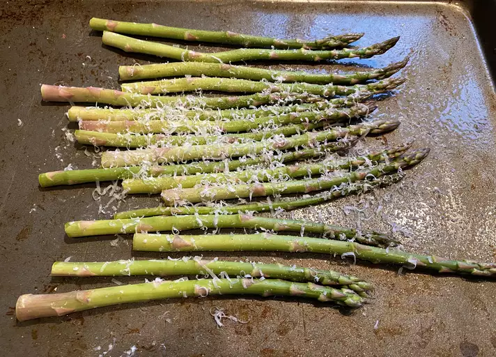

Roasted Asparagus with Parmesan

- Prep Time: 5 minutes
- Cook Time: 15 minutes
- Total Time: 20 minutes
- Servings: 4
Ingredients
- olive oil cooking spray
- 1lb fresh asparagus, tough ends trimmed
- 1/4cup shredded Parmesan cheese
- 1 tsp sea salt
- 1/4 tsp garlic powder, or to taste
Directions
- Preheat oven to 400 degrees F (200 degrees C)
- Spray the inside of a 9x13 casserole dish with olive oil cooking spray. Place asparagus in the dish and lightly spray spears with cooking spray.
- Sprinkle asparagus with Parmesan cheese, sea salt, and garlic powder.
- Roast in preheated oven until fork easily punctures thickest part of stem, about 12 minutes.